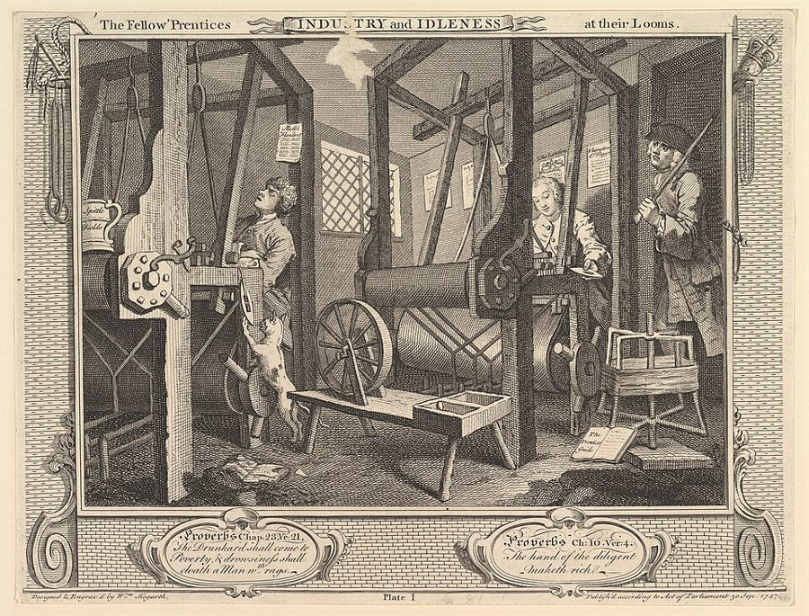
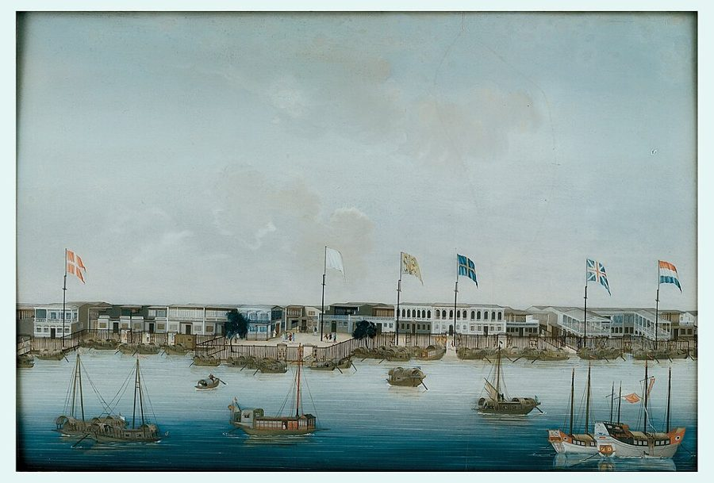
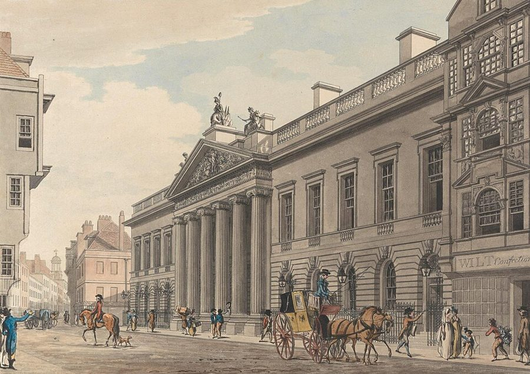

这一页在做什么
工资由什么决定？为什么北美的工人挣得比英格兰多，中国的工人却连家都难养？斯密先说，工资是雇主和工人谈出来的，而雇主占着上风；再说，能让工资长期往上走的，只有一国财富的持续增长。他在跟当时一种流行的看法唱反调：工人要穷一点、饭要贵一点，他们才肯卖力。读的时候抓两条线：工资的高低跟着什么走；斯密为什么认为普通人过得好是全社会的好事。

读之前：这一页在全书的哪里
上一页（第 7 章）讲市场价格围着自然价格转，章末预告要把价格的三块分开讲：工资、利润、地租。这一页讲第一块，工资。下一章（页 06）讲利润，斯密会说资本增加时工资往上走、利润往下走。各行各业的工资为什么不一样，留到第 10 章（页 07、08）；这一页只问：一个国家的工资水平，总的来说由什么决定。
一个国家的工人挣多挣少，取决于什么？国家越富，工人就挣得越多吗？
第 6–8 段说地租和利润是从劳动产物里「扣除」的，很容易读成「地主和老板拿走了本该归工人的东西」。斯密是在讲收入的来路，今天的经济学也不这么算，见「本站怎么看」。
读的时候带着这几个问题。不用先找答案，读完回来对照「检查一下理解」。
- 雇主和工人都会「联合」，为什么人们只听说工人联合？斯密对两边各说了什么不客气的话？§2
- 英格兰比北美富，北美的工资为什么反而高？中国又为什么低？§4
- 斯密说下层人民过得好对社会是好事，他给了哪两条理由？§6
- 有人说粮食便宜的年头工人偷懒，斯密拿什么来反驳？§8
这一页的路线
这一章先讲道理，再拿三个国家对照，最后回到英国自己。开头倒回土地和资本还没归私人的原始状态，随即说那个状态早就结束了，地租和利润成了两项扣除，所以工资得由雇主和工人去谈。接着讲谈判谁占上风、工资的底线在哪、什么能把工资推到底线以上：对劳动的需求在增长。北美、中国、孟加拉的对照是全章的高潮。读到第 28 段会觉得突然变成了统计报告：斯密在一条条举证英国工资高于底线，可以跳。第 36 段起转向评价：工资高是好是坏，由此牵出人口和勤劳两个话题，又驳了「贱年让人懒」。最后几段把粮价和工资的关系收一收。
斯密落在哪：工资的高低，看的不是一国多富，而是它富得多快：财富增长时雇主抢人，工资上涨；停滞时工资被压到刚够养家；衰退时人会饿死。所以优厚的工资是国家繁荣的标志，对社会是好事，还会让人更勤快。
分节地图
这一页是卷一第 8 章，本站切成 9 节。粗体是本站起的节名；「杨译里找」后面是杨敬年译本里这一节开头附近的小标题或第一句，在电子书里搜它就能跳过去；灰色的英文是原文这一节开头的几个词。标「先读」的是最短读法，读完打个勾。
- 劳动产物本来全归劳动者产物是劳动的自然工资THE produce of labour constitutes the …原始状态里产物全归劳动者；有了地主和雇主，地租、利润成了两项「扣除」。第 4 段的「贵五倍、其实便宜一半」很绕，可以略读。
- 雇主们心照不宣的联合普通所说的劳动工资…What are the common wages of …全章最有名的是第 13 段：雇主随时随地心照不宣地联合。同一段里也有斯密对工人闹事的批评，两头都读。
- 工资的底线和工资基金但是，尽管雇主们在同自己工人的…But though in disputes with their …工资的底线（第 15 段坎梯隆的算法），和专门用来付工资的那笔钱。后者在 19 世纪变成了一个有名的错误理论。
- 北美、中国和孟加拉高工资是由国民财富的增长而不是由它的实际大小引起的It is not the actual greatness …三国对照，全章的高潮。第 23 段抢手的寡妇，第 24 段关于中国的传闻，第 26 段点名东印度公司。
- 英国工资高于糊口线的证据在大不列颠，现时的劳动工资…In Great Britain the wages of …四条证据加一堆工资数字，结论第 28 段已经说了，可以跳。第 31 段末「人是最难运的行李」、第 33 段末的马车值得一看。
- 大多数人穷困的社会不会繁荣同时其他必需品和便利品也变得更加便宜The real recompence of labour, the …第 36 段是全章的名段。后面说贫穷不妨碍生孩子却养不活孩子，语气冷峻；第 43 段三种状态的心情很好记。
- 高工资让人更勤快劳动的丰厚报酬鼓励人口繁殖…The liberal reward of labour, as …只有一段，却很好看：高工资让人更勤快，计件给得太高又会把人累垮，雇主倒该劝工人悠着点。
- 物价贱的年头工人更懒吗说物价贱的年份会鼓励懒惰，这种意见是错误的In cheap years, it is pretended …斯密拿法国、苏格兰、约克郡的产量记录驳一个流行说法。第 48 段点破了雇主为什么喜欢贵年。
- 粮价、工资和生产力可是，劳动价格与食物价格之间有联系Though the variations in the price …粮价和需求两头拉，所以工资比粮价稳。第 57 段落脚：让工资上涨的资本增加，也在让东西变便宜。
先用中文过一遍：这一页的概念
先把这一页用到、斯密默认你懂的几个概念讲一遍。讲的是概念本身，斯密拿它推出什么，读原书时自己看。每个概念都有一句「今天」：今天的经济学怎么叫它、怎么看它。
§2雇主和工人的联合 combination
一方的许多人约好一起行动，在工资上对付另一方。工人联合，是一起要求涨工资，谈不拢就一起停工，相当于今天的工会和罢工；雇主联合，是约好谁也不多给，或者互相不挖人。18 世纪英国的法律只管一边：许多法令禁止工人联合涨工资，雇主之间的默契却没人管，也很难管，因为它常常不必说出口。所以斯密说，听不到雇主联合，不是因为没有，而是因为太平常。combination 在当时既指工会，也指串通，带一点贬义。
今天：雇主一方今天叫「买方垄断」（monopsony）：雇主少、工人难换工作时，雇主能把工资压在工人创造的价值以下。明着约定互不挖人，在美国已被当作违反反垄断法来查。
在这一页：第 11–13 段。第 17 段说，劳动需求旺的时候，雇主自己就会打破这种联合。
§3维持生活的最低工资 the lowest rate which is consistent with common humanity
工资能压到多低？斯密说有一条底线：一个人干活挣的，至少要养得活自己，多数时候还得多一些，好把孩子养大，不然这一行的人一代就断了。他转述坎梯隆的算法：一对穷夫妻要养大两个孩子才能接上班，而当时一半孩子活不到成年，所以要生四个；四个孩子的口粮约等于一个大人，于是男人至少要挣自己口粮的两倍。斯密说这个比例他不负责，他只肯定一点：夫妻俩合起来，得挣得比两人刚好糊口多一些。他管这条线叫起码人道所能容许的最低工资，译本：「符合普通人道主义的最低工资」。它不是今天政府规定的法定最低工资。
今天：李嘉图说劳动的自然价格是让工人活下去、延续后代的价格，19 世纪又有人推成「工资铁律」：工资总会被人口拉回糊口线。工业化以后实际工资长期上涨，这条「铁律」不成立。
在这一页：第 14–16 段立论；第 24 段说停滞的国家工资会压到这条线；第 28 段起说英国高于它。
§3工资基金 the funds which are destined for the payment of wages
斯密说，对靠工资过活的人的需求，只能跟着一笔「专门用来付工资的钱」一起增长。这笔钱有两个来源：地主和有钱人的收入，养家以外多出来的部分，会拿去雇仆人；独立工匠的本钱，买料和糊口以外多出来的部分，会拿去雇帮工。多出来的越多，雇的人越多。所以一国的收入和资本增长，对劳动的需求就增长。这个想法的要点是：先得有攒下来的钱，才雇得起人。杨译叫它译本：「预定用于支付工资的基金」。
今天：19 世纪它被推成「工资基金说」：这笔钱是个定数，工会多争到一份，别的工人就得少拿一份。穆勒 1869 年公开放弃了这一说。今天认为工资主要跟着劳动生产率和劳动市场的供求走。
在这一页：第 17–21 段。第 46–47 段、第 54–55 段讲年成好坏，用的还是这笔钱的增减。
§4进步、停滞、衰退三种状态 progressive, stationary, declining state
斯密按一国的财富在变多、不动还是缩水，把社会分成三种状态。要紧的是，他说工资看的是变化，不是多少。像北美那样一年比一年富，雇主年年要添人手，只好互相抬价抢工人；像中国那样很富却几百年不动，每年的人手都够用还有多，工人只好互相压价抢活，工资压到刚够养家；像孟加拉那样在缩水，连这条线都守不住，就会饿死人。打个比方：决定你加薪的，不是公司有多大，而是公司在扩张还是在收缩。
今天：工资涨得快不快，确实和经济增长、劳动需求增长得快不快关系很大。但工资的水平主要跟着劳动生产率走：停滞的富国，工资仍远高于增长再快的穷国。
在这一页：第 22–27 段三国对照，第 43 段说进步状态对劳动贫民最好。货币工资和真实工资之分，见页 03 的真实价格和名义价格。
§7高工资经济 the liberal reward of labour
当时英国流行一种看法：工人穷一点、面包贵一点，才肯卖力干活；工资高了、粮食便宜了，他们就去喝酒闲逛。斯密反过来说：工资是对勤劳的鼓励。人吃得饱，身体就壮；有盼头，觉得日子能越过越好，甚至老了能过得宽裕，就肯使劲。所以工资高的地方，工人更麻利。他也承认有一些人挣够一周的就歇着，还说计件给得太高，有人会把自己累垮。liberal 在这里是「优厚的、大方的」，和政治上的自由主义无关。
今天：叫「效率工资」：雇主有意多给一点，换来更用心的工作、更少的跳槽和偷懒。福特 1914 年的「五美元日薪」是最常被举的例子。
在这一页：第 44 段立论，第 45–51 段反驳「贱年工人偷懒」。
故事和背景
这一页里的人、事和 18 世纪的东西，按在书里出现的顺序排，标题前是节号。
§2只禁一边的法律
第 12 段说，议会有许多法令禁止工人联合起来涨工资，却没有一条禁止雇主联合起来压工资。Cannan 在注里举了几条，都是针对一个个行当的，比如 1720 年代管伦敦裁缝、梳毛工和织工、伦敦附近制砖工的法令。斯密去世九年后，英国在 1799 年和 1800 年通过两部《结社法》，把工人的联合一概定为违法，背景之一是怕法国大革命式的激进组织。1824 年两部法律被废除，第二年的新法让工会合法，又多方限制它的活动。1834 年，多塞特郡托尔帕德尔村的六个农工组织工会，按 1797 年一条禁止秘密宣誓的法律被判流放澳大利亚。舆论大哗，请愿不断，他们在 1836 年获赦，陆续回国。斯密说工人的联合闹得再凶，多半也以「领头人受罚」收场；托尔帕德尔的六个人连闹都没闹，只是宣誓结社，就被重判。
§3坎梯隆：烧掉的房子和迟到的书
坎梯隆的一生像小说。1719–1720 年约翰·劳在法国搞密西西比公司的股票狂潮，他在里头赚了大钱。1734 年 5 月，他在伦敦的住宅起火烧光，人们后来认定他是先遭杀害、再被放火的；三个仆人受审后无罪，被怀疑最大的厨师一直没抓到。因为这件事疑点太多，至今还有人猜他是诈死脱身。他的《商业性质概论》在他死后二十一年，1755 年才在法国出版，斯密引的就是这本。斯密转述他时用了「似乎」，Cannan 说这不是客套：坎梯隆那一段原文本来就含糊，看不出妻子的收入算没算进去。
§4纽约的工资，写于「骚乱」之前
第 22 段的纽约工资后面，斯密从第二版（1778 年）起加了一条注：这是 1773 年写的，在「目前的骚乱」开始之前；后来的版本改成「最近的骚乱」。骚乱，就是北美独立战争。《国富论》1776 年 3 月出版，比《独立宣言》早约四个月，斯密写这段时北美还是英国的殖民地。数字本身很有看头：纽约普通工人一天挣殖民地货币 3 先令 6 便士，合英镑 2 先令，也就是 24 便士；斯密在第 31 段说，伦敦一带普通劳动一天 18 便士，苏格兰低地 8 便士。造船木匠一天合英镑 6 先令 6 便士，其中包括一品脱朗姆酒。北美的粮食又比英格兰便宜，真实工资的差距比账面上还大。
§4带着五个孩子的寡妇
第 23 段：北美人口二十到二十五年翻一番，主要靠本地人生养，不是靠移民。据说活到老的人常常看到自己有五十到一百个后代。一个孩子在离家前干的活，算下来能给父母挣净一百镑。在欧洲中下层，带四五个孩子的年轻寡妇很难再嫁；在北美，她被当作一笔财产来追求。翻番的说法当时流传很广：富兰克林 1751 年写的一篇人口短文就估计殖民地人口至少二十年翻一番，Cannan 在注里引的是 Price 等人的数字。后来马尔萨斯在 1798 年的《人口论》里说，不受限制的人口每二十五年翻一番。斯密由此推出：孩子值钱，人就早婚多生。第 40 段他把这推广成了一条规律。
§4广州江上的船家

第 24 段说，广州附近成百上千户人家在陆上没有房子，常年住在河上的小船里，抢着捞欧洲船上扔下的垃圾，死狗死猫也吃。珠江上确实有大批以船为家的水上人家，叫「疍家」。但斯密没到过中国，材料来自马可·波罗、魁奈和耶稣会士的书。有意思的是，Cannan 注里引的魁奈那篇 1767 年的文章，本来是在称赞中国的制度。最刺眼的一句是：大城市里溺死弃婴「据说」是一些人公开谋生的行当。Cannan 查了出处：耶稣会士杜赫德 1735 年的书里写的是，有养不起孩子的穷人家请接生婆把刚生下的女婴溺死。Cannan 猜，「专门的行当」可能是把法文的「接生婆」读岔了。
§4孟加拉的饥荒

第 26 段说孟加拉「一年饿死三四十万人」，指的是 1769–1770 年的孟加拉大饥荒。这是斯密听来的数。1770 年公司方面估计，死了约三分之一的人，约一千万；这个比例是饥荒后英国官员下乡看了一圈估出来的，今天有历史学家认为它夸大了，修正的估计低到一百多万。即便取最低的数，也比斯密说的多得多。公司 1765 年刚拿到孟加拉的收税权，据记载，饥荒中税没有减，还为了凑足收入加了一成，这是后人指控它最重的一条。这是全书第一次点名批评东印度公司，卷四、卷五还有更重的话。
§5燕麦：在英格兰喂马，在苏格兰养人
第 33 段：苏格兰普通人主要吃燕麦，比英格兰同一等级的人吃得差。斯密说，这是工资低的结果，不是原因，常听人说反了。接着打了个比方：不是因为一个人坐马车、邻居走路，所以一个富一个穷；而是因为一个富，才坐得起马车，另一个穷，只好走路。燕麦是当年英格兰人取笑苏格兰人的老话题。约翰逊 1755 年的《英语词典》给「燕麦」下的定义是：一种谷物，在英格兰一般喂马，在苏格兰却养活人。苏格兰人的回敬流传着好几个版本，大意是：所以英格兰出好马，苏格兰出好人。这一节标了「可跳过」，马车那句值得专门翻过去看。
§7拉穆志尼和累垮的木匠
第 44 段提到的 Ramazzini（1633–1714），杨译「拉穆志尼」，是意大利医生。他 1700 年在摩德纳出版《论手艺人的疾病》，一个行当一章，讲这一行的工人会得什么病、医生该问什么、怎么防。他常下作坊跟工人聊，还主张医生问诊时，在希波克拉底列的那些问题之外再加一问：你是干什么活的？今天他被尊为职业医学之父。斯密引他，是为了说明计件的高工资会把人累垮：伦敦的木匠，被认为最好的体力撑不过八年；士兵干计件活时，军官得跟包工头约好每人一天最多挣多少，免得他们互相比着干，把身子干坏。
原典：斯密的原话
这本书是公版书，下面几段整段放斯密的原文，配本站的白话译。原文后面的灰字告诉你它在杨译里的哪个小标题附近，可以对照着读；最后一行是这段里今天容易读错的 18 世纪词。
§2没人听说的联合
全书最常被拿来证明「斯密不是老板代言人」的一段。这里把前后两半都放上：雇主的沉默，和工人的喧闹。在杨译虽然听到雇主的联合比听到工人的联合较少那个小标题下面。
We rarely hear, it has been said, of the combinations of masters; though frequently of those of workmen. But whoever imagines, upon this account, that masters rarely combine, is as ignorant of the world as of the subject. Masters are always and every where in a sort of tacit, but constant and uniform combination, not to raise the wages of labour above their actual rate. To violate this combination is every where a most unpopular action, and a sort of reproach to a master among his neighbours and equals. We seldom, indeed, hear of this combination, because it is the usual, and one may say, the natural state of things which nobody ever hears of. … But whether their combinations be offensive or defensive, they are always abundantly heard of. … They are desperate, and act with the folly and extravagance of desperate men, who must either starve, or frighten their masters into an immediate compliance with their demands.
本站译：有人说，我们很少听说雇主们联合，工人联合倒常听说。可谁要是因此以为雇主很少联合，那他对世道和这件事都一样无知。雇主们无论何时何地，都处在一种不明说、却一贯而齐心的联合之中：不让工资涨到眼下的水平以上。谁破坏这种联合，到哪里都极不讨人喜欢，在邻居和同行面前算是一种丢人的事。我们确实很少听说这种联合，因为它是寻常的、甚至可以说是天经地义的状态，这种状态谁也不会听人说起。……可是工人的联合，不管是主动出击还是被迫自卫，总是闹得人尽皆知。……他们走投无路，干起事来带着走投无路的人的那种愚蠢和过火：要么饿死，要么把雇主吓住，逼他们马上答应条件。
两半要一起读。斯密不替雇主说话，也不替工人闹事叫好；他说的是双方的力量不对等。段末他还说，这类闹事多半以领头人受罚或破产收场。
- masters雇主、东家，不是奴隶主，也不是师傅
- combination联合、串通，当时也指工人的结社
- tacit心照不宣的、不说出口的
- offensive or defensive主动出击的或被迫自卫的（借自打仗的说法）
§4孟加拉和北美
常被忽略的一段：斯密在讲工资的一章里，直接点名批评东印度公司。在杨译在一个衰落的国家情形就不是这样那个小标题下面一段的后半。
This perhaps is nearly the present state of Bengal, and of some other of the English settlements in the East Indies. In a fertile country which had before been much depopulated, where subsistence, consequently, should not be very difficult, and where, notwithstanding, three or four hundred thousand people die of hunger in one year, we may be assured that the funds destined for the maintenance of the labouring poor are fast decaying. The difference between the genius of the British constitution which protects and governs North America, and that of the mercantile company which oppresses and domineers in the East Indies, cannot perhaps be better illustrated than by the different state of those countries.
本站译：孟加拉和英国在东印度的另外几处属地，眼下大概就差不多是这种情形。一个土地肥沃、人口先前已经大减的地方，按理说糊口不该太难；要是在这样的地方一年还饿死三四十万人，我们就可以断定，用来养活劳动贫民的那笔钱正在飞快地缩水。保护和治理北美的英国政体，和在东印度欺压、专横的那家商业公司，两者的精神有什么不同，恐怕没有比这几个地方的不同处境更好的说明了。
两个「perhaps」都是斯密的原话，他对孟加拉的了解来自传闻。「三四十万」是他听到的数，实际死的人多得多，见「故事和背景」。书出版时，北美已经和这个「保护它的政体」打起来了。
- settlements属地、据点，这里指英国在印度的地盘
- genius精神、特性，不是「天才」
- constitution政体、国家体制，不专指一部成文宪法
- mercantile company商业公司，指东印度公司
§6大多数人穷苦的社会不会繁荣
全章的名段，也最能看出斯密心里的「国富」是什么：大多数人的日子。在杨译劳动的高收益对社会有益那个小标题前面一段。
Is this improvement in the circumstances of the lower ranks of the people to be regarded as an advantage or as an inconveniency to the society? The answer seems at first sight abundantly plain. Servants, labourers and workmen of different kinds, make up the far greater part of every great political society. But what improves the circumstances of the greater part can never be regarded as an inconveniency to the whole. No society can surely be flourishing and happy, of which the far greater part of the members are poor and miserable. It is but equity, besides, that they who feed, cloath and lodge the whole body of the people, should have such a share of the produce of their own labour as to be themselves tolerably well fed, cloathed and lodged.
本站译：下层人民的境况这样改善，对社会来说算好处，还是算麻烦？乍一看，答案再明白不过。各种仆役、劳工和工人，在每一个大国里都占了绝大多数。让大多数人日子变好的事，绝不能算是整体的麻烦。一个社会，要是绝大部分成员又穷又苦，它肯定谈不上繁荣和幸福。再说，给全体人民提供吃的、穿的、住的那些人，自己也该从自己的劳动成果里分到足够的一份，让自己吃得、穿得、住得还过得去，这不过是公道。
斯密为什么要问这个？因为当时真有人认为下层生活改善是坏事：他们会变懒，会染上「奢侈之风」（上一段他刚提到这种抱怨）。他用两条理由回答：一条算账，大多数人好就是整体好；一条讲公道。
- servants仆役，也泛指受雇的人，包括农场的长工
- political society国家，有政府的社会
- equity公道、公平
- tolerably还算过得去地，不是「能忍受地」
§6进步的状态是欢快的
两段连读，好读又好记：社会在富起来、不动、往下走的时候，各是一种心情。在杨译高工资增加人口和进步的状态对劳动贫民是最佳的状态这两个小标题下面。
The liberal reward of labour, therefore, as it is the effect of increasing wealth, so it is the cause of increasing population. To complain of it, is to lament over the necessary effect and cause of the greatest public prosperity. … It deserves to be remarked, perhaps, that it is in the progressive state, while the society is advancing to the further acquisition, rather than when it has acquired its full complement of riches, that the condition of the labouring poor, of the great body of the people, seems to be the happiest and the most comfortable. It is hard in the stationary, and miserable in the declining state. The progressive state is in reality the cheerful and the hearty state to all the different orders of the society. The stationary is dull; the declining melancholy.
本站译：所以，优厚的劳动报酬既是财富增长的结果，又是人口增长的原因。抱怨它，就是在为国家最大的繁荣叹气：它正是这份繁荣必然的结果，也是它必然的原因。……也许值得一提：劳动贫民，也就是人民的大多数，日子似乎过得最幸福、最舒坦的时候，是在进步状态下，也就是社会还在往更富走的时候，而不是已经富到头的时候。在停滞状态下，他们日子艰难；在衰退状态下，日子悲惨。进步状态其实让社会各个阶层都心情舒畅、精神饱满；停滞状态沉闷，衰退状态凄凉。
「full complement of riches」是第 24 段说中国的那个词：富到法律和制度容许的头了。斯密的意思是，让人高兴的是「在变好」，不是「已经很好」。
- liberal优厚的、大方的，和政治上的自由主义无关
- complement全部、满额（不是 compliment「恭维」）
- labouring poor劳动贫民：泛指靠干活过日子的普通人，不专指穷人
- orders阶层
§7悠着点干的人干得最多
出人意料的一段「劳动卫生学」：经济学的鼻祖劝雇主别催工人。在杨译高工资鼓励勤勉那个小标题前面那一大段的后半。
Workmen, on the contrary, when they are liberally paid by the piece, are very apt to over-work themselves, and to ruin their health and constitution in a few years. A carpenter in London, and in some other places, is not supposed to last in his utmost vigour above eight years. … Excessive application during four days of the week, is frequently the real cause of the idleness of the other three, so much and so loudly complained of. … If masters would always listen to the dictates of reason and humanity, they have frequently occasion rather to moderate, than to animate the application of many of their workmen. It will be found, I believe, in every sort of trade, that the man who works so moderately, as to be able to work constantly, not only preserves his health the longest, but, in the course of the year, executes the greatest quantity of work.
本站译：反过来，工人要是按件计酬、给得又优厚，就很容易干过头，几年工夫就把身体搞垮。在伦敦和别的一些地方，一个木匠一般认为保持最好的体力不会超过八年。……一周里四天干得太猛，常常才是另外三天闲着的真正原因，而这三天的闲，人们抱怨得又多又响。……雇主们要是总肯听从理智和人道的吩咐，他们常常该做的倒是让许多工人干得缓一点，而不是给他们鼓劲。我相信，每一行都会发现：干活有节制、因而能一直干下去的人，不但身体保持得最久，一年下来干出的活也最多。
中间那句是斯密在替工人辩护：大家抱怨的「歇三天」，原因常常是前四天累狠了。杨译这一句把抱怨和原因的关系弄混了，见下面的勘误。
- by the piece计件：按做出多少件付钱
- constitution体质、身子骨，不是宪法
- application用功、埋头干活，不是「申请」
- dictates吩咐、指引
译本勘误
杨译这一章整体可靠。下面只收会把人读歪的几处。灰字是英文原文那一处的几个词；方框里是杨译的原句，在电子书里搜它。
§2法律不只是「不禁止」，还「准许」漏译
… the law, besides, authorises, or at least …
译本：「法律和政府机关至少是不禁止他们的联合」
原文是「法律准许、至少不禁止雇主联合」。杨译漏了「准许」，还多出原文没有的「政府机关」。斯密这一段要说法律偏袒雇主，丢了「准许」，口气弱了一截。
§41773 年还没有「美币」误译
… three shillings and sixpence currency, …
译本：「美币3先令6便士」
原文的 currency 指纽约殖民地自己的货币，和英镑（sterling）对着说：殖民地货币 3 先令 6 便士合英镑 2 先令。那时还没有美国，也没有美元，读成「美币」会把年代弄错。
§5比的是上个世纪和这个世纪误译
… grain was dearer in both parts …
译本：「在上个世纪，苏格兰的谷物比英格兰贵」
这是杨译的一个小标题（Cannan 的页边小结），原意是：上个世纪谷物比本世纪贵、工资比本世纪低。杨译成了苏格兰和英格兰相比。这一段的论点正是「粮价降了、工资涨了」，按小标题读会读歪。
§7被抱怨的是「歇三天」误译
… Excessive application during four days of …
译本：「常常有人高声抱怨，一个星期中四天的紧张工作」
原文是：人们大声抱怨的那「三天闲着」，真正的原因常常是前四天干得太猛。这是斯密自己的判断，替工人说话。杨译读起来像是抱怨的人在讲这个因果，斯密的辩护就看不出来了。
§8election 是税区，不是选举术语
… in the election of St. …
译本：「在圣艾蒂安选举中担任税收官」
election 在这里是法国旧制度下征收军役税（taille，一种按户摊派的直接税）的一级财政区。麦桑斯是圣艾蒂安税区的收税官，不是在什么选举里任职。
§8印花税法一废，约克郡才恢复译反
… after the repeal of the American …
译本：「在美洲印花税法废除以后，约克郡的制造业」
原文是：1756 年荒年那一年约克郡呢绒业下滑，直到 1766 年废除北美《印花税法》以后，产量才回到 1755 年的水平。杨译把「废除以后」挪到了「下降」前面，读起来像是废法让生意变坏，因果正好反了。
读完：斯密到底说了什么
读完原书再看。下面把这一页的论点按逻辑重排，每条后面标着依据在哪几段，以及今天怎么看（理由在「对照今天」和「本站怎么看」）。
工资由雇主和工人谈，雇主一般占上风
双方利益「绝不相同」。雇主人少，容易联合；法律准许或至少不禁止雇主联合，却禁止工人联合；雇主靠积蓄能撑一两年，许多工人撑不过一周。雇主之间还有一种心照不宣、从不说破的联合。
§2 第 11–13 段工资高低看财富增长得多快，不看国家多富
对劳动的需求只能随着付工资的那笔钱，也就是一国的收入和资本增长。增长时雇主抢人，工资远高于底线；停滞时工资压到刚够养家；衰退时守不住底线。北美、中国、孟加拉是三个例子。
§3 §4 第 17–27 段对人手的需求调节人口，把工资拉回社会需要的水平
贫穷不妨碍生育，却养不活孩子。工资高，养活的孩子多，人口增加；人太多，工资又被压回去。斯密说这和任何商品一样：需求「必然」调节人的生产。
§6 第 37–42 段高工资让人更勤快，粮价便宜的年头并不让人更懒
吃得饱、有盼头的人干得更好；少数人挣够了就歇，计件太高还会累垮。说贱年工人偷懒，是因为贵年工人更好使唤；法国的记录显示贱年产量一般更高，苏格兰和约克郡的账看不出关系。
§7 §8 第 44–51 段工资上涨抬高价格，但带来它的资本增加让许多东西更便宜
资本多了，雇主会把活分得更细、配更好的机器，社会上也有更多人去琢磨机器；许多商品因此用的劳动少得多，工资涨的那点被抵消还有余。
§9 第 57 段合起来：工人过得好不好，取决于国家是不是在持续变富；而工人过得好，又是国家繁荣的标志和公道的要求。斯密由此反对「穷才勤快」，也为全书把增长当作头等大事埋下了理由。
对照今天
这一页里能拿后来的研究和数据检验的说法。每张卡判的是标题里「书里的说法：」后面那一句。
- 成立今天的经济学和证据支持这句话。
- 部分成立大方向对，细节或适用范围要改。
- 过时说的是 18 世纪的世界，当时也许对，今天的制度和技术已经变了。
- 被推翻后来的经济学或证据说明它错了。
- 有争议经济学界至今没有定论，两边各有代表性的研究。
书里的说法：在工资的讨价还价中，雇主一般占上风
- 书里
- 第 12 段：雇主人少、能撑；第 13 段：雇主随时随地心照不宣地联合。
- 当时
- 法律禁止工人联合，雇主的默契没人管。Cannan 注里列了 1720 到 1740 年代的几条行业禁令。
- 今天
- 雇主能压工资，曾被当作只发生在矿山小镇的特例。Card 和 Krueger 1994 年发现，新泽西提高最低工资后快餐店的就业并没有减少，重新引起了对雇主力量的研究；Card 2022 年的综述说，经济学家越来越同意企业在工资上有一定的定价权，只是来源还在争。明着的串通也有：2010 年 Apple、Google 等六家公司因互不挖角的协议和美国司法部和解；Krueger 和 Ashenfelter 发现，2016 年美国大型连锁加盟企业的合同里有 58% 写着禁止互相挖人。核对于 2026-10。依据：Card & Krueger, American Economic Review, 1994；Card, Who Set Your Wage?, American Economic Review, 2022；Krueger & Ashenfelter, Journal of Human Resources, 2022。
- 另一边
- 斯密说的法律那一半已经过时：英国 1824 年后工会逐步合法，今天反倒是雇主串通压工资的协议违法。
书里的说法：工资最高的不是最富的国家，而是富得最快的国家
- 书里
- 第 22–23 段。Cannan 注：斯密这里写「引起工资上升」是笔误，他要说的是「工资高」。
- 当时
- 经济史学家 Lindert 和 Williamson 估算，1774 年北美殖民地的人均收入已经高过英国。斯密看到的工资差距是真的。
- 今天
- 这句对了一半。劳动需求增长快，工资确实涨得快。但长期看，工资的水平跟着劳动生产率走：一个国家增长慢下来，只要生产率高，工资仍远高于增长再快的穷国。北美当年工资高，也和地多人少、要靠高工资吸引移民有关，不全是「富得快」。第 57 段说带来工资上涨的资本增加同时提高了生产率，这一点今天看是对的，正是工资长期上涨的来路。核对于 2026-10。依据：Lindert & Williamson, Unequal Gains, 2016；Allen, Murphy & Schneider, Journal of Economic History, 2012。
书里的说法：中国早已停滞，下层比欧洲最穷的国家还穷
- 书里
- 第 24 段；材料来自马可·波罗、魁奈和耶稣会士（Cannan 注 26–28），斯密没去过中国。
- 当时
- 欧洲人对中国的印象两极：魁奈等人把中国当成治理的榜样，另一些旅行者写它的贫困。斯密取的是后一面。
- 今天
- 两半要分开看。停滞：Allen 等人 2011 年用北京、广州等地的工资和物价算出，18 世纪到 19 世纪初中国工人的实际工资基本没涨，这和斯密一致；但清代人口在 18 世纪大约从一亿五千万增到三亿以上，总量并没有停。最穷：同一研究发现，18 世纪亚洲建筑工人的实际收入和欧洲落后地区相近，只是远不如伦敦、阿姆斯特丹。核对于 2026-10。依据：Allen, Bassino, Ma, Moll-Murata & van Zanden, Economic History Review, 2011。
- 另一边
- 中国和西欧什么时候拉开差距，至今在争。一边，Pomeranz 2000 年的《大分流》认为长江三角洲直到 1800 年前后都和英格兰相差不大；另一边，Broadberry、管汉晖、李稻葵 2018 年按国民账户估算，1750 年时差距已经大到地区差异补不上。依据：Pomeranz, The Great Divergence, 2000；Broadberry, Guan & Li, Journal of Economic History, 2018。
书里的说法：对人手的需求调节人口：工资高，养活的孩子多，人口就增加
- 书里
- 第 39–40 段；第 38 段说他常听人讲，高地一个母亲生了二十个孩子，活下来的不到两个，并不稀奇。
- 当时
- 工业化以前大体如此：穷人不是生得少，是养不活。Wrigley 和 Schofield 1981 年重建英格兰三百年的人口史，发现生育率跟着实际工资起落，只是要滞后很多年，主要通过结婚早晚。马尔萨斯 1798 年的《人口论》把这个想法推成了核心。
- 今天
- 19 世纪后期起，富国先后经历「人口转型」：死亡率先降，生育率随后大降。今天往往是越富的社会生得越少：韩国 2023 年的总和生育率只有 0.72，是世界最低，远低于维持人口所需的 2.1。工资高不再意味着孩子多，斯密说的调节机制在今天的富国已经失灵。核对于 2026-10。依据：Wrigley & Schofield, The Population History of England 1541–1871, 1981；韩国统计厅 2024 年 2 月公布的 2023 年初步数据。
书里的说法：工资高的地方，工人更勤快
- 书里
- 第 44 段；第 45–51 段驳「贱年工人偷懒」。
- 当时
- 斯密反驳的是当时流行的「穷才勤快」（见「本站怎么看」）。他的证据是麦桑斯抄的法国官方记录，和苏格兰麻布、约克郡呢绒的产量账。
- 今天
- 前半句有证据。福特 1914 年把日薪提到 5 美元，求职的人排起长队，生产率和利润随之上升，Raff 和 Summers 1987 年认为这正是「效率工资」在起作用。可另一面也是真的：工资涨了，人会拿一部分去换闲暇。富国工人一年的工时，从 1870 年的三千小时以上降到 2000 年的一千四到一千八百小时。这不是偷懒，是斯密说的「少数人挣够就歇」变成了多数人的选择。核对于 2026-10。依据：Raff & Summers, Journal of Labor Economics, 1987；Huberman & Minns, Explorations in Economic History, 2007。
- 另一边
- Raff 1988 年又提出，福特加薪主要是怕工人联合起来，是分一份利润给工人，未必为了效率。依据：Raff, Journal of Economic History, 1988。
本站怎么看
这一页最值得争的几个问题。每块先摆主流看法，再摆斯密在书里怎么说，最后是本站的评论。
斯密站在雇主一边，还是工人一边
主流看法：两边都引他。芝加哥学派的 Stigler 1971 年说，《国富论》是一座建在自利这块花岗岩上的宫殿；哲学家 Fleischacker 2004 年的《分配正义简史》则认为，斯密是头一个把穷人的处境当作正义问题来看、主张按需要帮助穷人的大思想家。
斯密的看法：第 12–13 段：雇主人少、能撑、法律偏袒，还随时默契地联合；工人闹事是走投无路的人的「愚蠢和过火」。第 36 段：让养活全社会的人自己过得去，「不过是公道」。第 34 段末他又说，经验似乎表明法律从来没能把工资定好。
本站的评论：这一章斯密明显同情工人，但他不是工人运动的朋友：他不看好闹事，也没主张立法给工人涨工资。他盯的是力量对比：谁人少、有钱、有法律撑腰，他就怀疑谁，这一章是雇主，别处是商人和制造业者（页 08 还说，法规偏向工人时总是公正的，偏向雇主时就不一定）。他给工人开的药方是让国家持续变富，雇主自然会抢人。说「斯密是老板的代言人」，读完这一章站不住。
地租和利润，是从工人那里扣下的吗
主流看法：马克思很看重这几段，他在 1860 年代写的《剩余价值理论》里说，斯密已经看出地租和利润都出自工人加上去的价值。19 世纪末以后的主流经济学不这么算：J. B. Clark 1899 年的《财富的分配》提出边际生产力理论，土地和资本本身也出力，竞争的市场上每种要素大体按它多带来的那份产出拿报酬。
斯密的看法：第 2–8 段：原始状态里产物全归劳动者；有了地主和雇主，地租是第一项扣除，利润是第二项。但第 5 段他说那个状态早就结束，再推它的后果「没有意义」；第 7–8 段说雇主要先垫付工人的口粮和材料，利润是这份垫付的回报。
本站的评论：斯密在讲收入从哪来、按什么顺序分，并没有说地主和雇主在偷东西。别一步跳到「利润都是剥削」：没有人先垫付，工人等不到收获的那天，机器和工具也让同样的劳动产出多得多（Cannan 注里正好批评斯密漏算了工具和厂房）。但「各按贡献拿」只在竞争充分时成立，这一页讲的雇主联合，恰恰是不充分的情形。
穷才能让人勤快吗
主流看法：斯密那个时代很多人这么想。农学家 Arthur Young 1771 年写道：除了白痴，谁都知道下层阶级必须保持贫穷，不然永远不会勤劳。今天的争论换了个说法：救济会不会「养懒汉」。Banerjee 等人 2017 年重新分析六个发展中国家的七个随机实验，没发现现金补助让人少干活；美国 2024 年发表的一项实验，每月给人 1000 美元、连发三年，领钱的人每周少干一两个小时。
斯密的看法：第 44–48 段：大多数人吃得饱、有盼头时干得更好；雇主夸贵年，是因为那时工人「更谦卑、更依附」，地主和农场主还能多收租、多赚钱。第 49–51 段拿法国、苏格兰、约克郡的记录作证。
本站的评论：斯密的高明，是把一个道德问题变成了能查证的问题：贱年产量到底高不高？他的证据粗糙，方向却对。他还点破了说这话的人的利益：鼓吹「穷才勤快」的，往往是从工人穷里得好处的人。今天的证据大体站在他这边：钱多了，人会少干一点，但远到不了「养懒汉」的地步。
本站的总体看法：这是全书对普通人最热心的一章，也是最经得起时间的一章之一：雇主有议价优势、高工资让人更卖力、大多数人过得好才算国富，今天都有证据支持。要修正的是两处：工资的水平主要跟着生产率而不是增长速度走；人口随工资涨落的规律，在工业化以后的世界失灵了。
检查一下理解
先在心里答，再点开。答错的那题，回书里把对应那一节再读一遍。
1.（§2）斯密给了哪几条理由，说雇主在工资争执中占上风？
雇主人少，容易联合；法律准许或至少不禁止雇主联合，却禁止工人联合；雇主靠积蓄能撑一两年，许多工人没活干撑不过一周。
2.（§2）为什么人们很少听说雇主联合？
因为那是常态：雇主随时随地默契地不让工资涨，用不着说破。工人联合要大吵大闹才可能有结果，所以人人都听说。
3.（§3）工资有底线吗？斯密怎么说？
有。至少要够一个人糊口，多数时候还要多一些，好让夫妻俩养大孩子，否则这一行的人一代就断了。具体多出多少，他不肯下结论。
4.（§4）北美比英格兰穷，工资为什么更高？
北美富得快，对劳动的需求年年增长，人手总是不够，雇主只好互相抬价抢工人。看的是财富增长的速度，不是总量。
5.（§4）中国和孟加拉的工人处境有什么不同？
中国停滞但不倒退，工资压到刚够养家，人数勉强维持；孟加拉在衰退，养活劳动者的那笔钱在缩水，连底线都守不住，人成批饿死。
6.（§7）斯密为什么说雇主该让工人「悠着点」？
计件给得高，工人容易干过头、累垮身体，猛干四天常常就得歇三天；干得有节制、能一直干的人，身体最耐久，一年里干的活也最多。
7.（§8）雇主为什么喜欢粮价贵的年头？
贵年工人找活难，更谦卑、更好使唤，工资也压得下来；地主和农场主的地租、利润还随粮价上涨。
用一句话写下：斯密在这几章反对谁、主张什么，今天还成不成立。
想一想：你所在的行业这几年在扩张还是在收缩？加薪和跳槽的机会跟着变了吗？让你工资涨的，是公司多赚了钱，还是别家来抢人？
精彩回顾
隔几周回来时看这里。想不起来，点节号回到那一节。
一句话：工资看国家富得多快，不看国家多富；普通人过得好，是繁荣的标志，不是社会的负担。
人们很少听说雇主联合，不是因为没有，而是因为它是常态，没人说破。工人的联合，却总是闹得人尽皆知。
§2英格兰比北美富，北美工人却挣得多：纽约普通工人一天合 24 便士，伦敦 18 便士。在北美，带五个孩子的寡妇是一笔财产。
§4斯密说一年饿死三四十万人，拿它对照北美，点名批评东印度公司。实际死的人多得多。
§4几英里外工资就差两三成，人却不搬家。斯密说：人是所有行李里最难运的一件。
§5养活全社会的人，自己也该吃得、穿得、住得过去，这「不过是公道」。
§6伦敦的木匠，最好的体力撑不过八年。斯密劝雇主：干得有节制、能一直干的人，一年里干的活最多。
§7